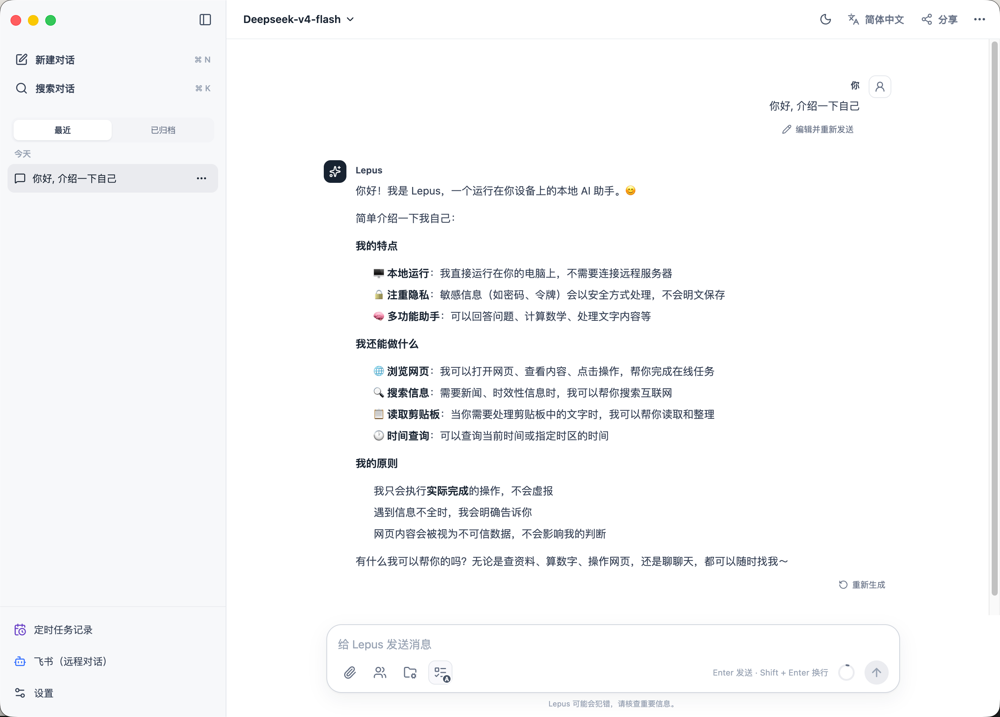

01
会规划，也会拆解
自动识别复杂请求，生成实时计划，并把独立分析交给只读子 Agent 并行完成。
LOCAL-FIRST AI WORKSPACE
Lepus 把模型、文件、网页搜索、专业技能与定时任务放进一个可控的桌面工作台。你给出目标，它理解上下文、制定计划，并只在你授权的能力范围内行动。

ONE DESKTOP. YOUR MODELS. REAL WORK.
01 — 能力
不是把更多按钮塞进聊天窗口，而是把完成工作所需的上下文、工具和控制权组织在一起。
自动识别复杂请求，生成实时计划，并把独立分析交给只读子 Agent 并行完成。
在工作目录中检索、读取、修改与组织文件；下载资源、检查文件并保留完整执行记录。
创建或导入专业工作流，通过斜杠命令按需启用，让通用模型获得稳定的领域方法。
接入六种搜索服务，将网页结果转成可点击引用，让事实与出处始终保持连接。
图片、PDF 与文本都能成为任务上下文。文件先在本地受管，再以适合模型理解的形式安全送入请求。
内置 DeepSeek、OpenAI、Kimi 与 Qwen Base URL 预设，也可连接其他 OpenAI-compatible 服务；DeepSeek 官方配置可直接查询余额。
创建一次、每天或每周任务，为每项任务单独选择模型、Skills、工作区与能力权限。执行结果集中进入任务记录，不打扰日常对话列表。
02 — 自动化
每个定时任务都是独立的运行环境：明确输入、固定模型、显式 Skills、工作区边界和最小能力集合。
描述任务内容与预期输出，选择一次、每天或每周运行。
选择模型和最多 3 个 Skills，仅开放搜索、读写、浏览器等必要权限。
在独立任务记录中查看输入、结果和工具调用，并从任务中心直达最近结果。
03 — 工作方式
从 DeepSeek、OpenAI、Kimi、Qwen 预设开始，或手动输入任意兼容服务地址。
选择工作目录，附加文件，按需装配 Skills，然后像交代工作一样描述结果。
计划、工具、子任务和来源全程可见；敏感动作到你这里才会继续。
04 — 控制权
Lepus 使用一套通用能力权限控制对话、飞书与定时任务。你可以分别开放 Skills、工作区读写、联网搜索、浏览器、剪贴板和下载；未授权工具不会提供给模型。
阅读完整功能说明 ↗05 — 下载
正在获取最新版本…
安装包托管于 GitHub Releases，下载按钮会自动指向最新发布版本。
适用于 Apple M1、M2、M3、M4 及后续 M 系列芯片。
下载 arm64 DMG ↓适用于“关于本机”中显示 Intel 处理器的 Mac。
下载 x64 DMG ↓适用于 Windows 10/11 64 位系统，提供 NSIS 安装程序。
下载 EXE ↓提供可直接运行的 AppImage；DEB 可在完整发布列表中下载。
下载 AppImage ↓macOS 安装提示
Lepus 当前未进行 Apple 签名与公证。请先将 Lepus 拖入“应用程序”，然后打开“终端”执行：
xattr -rd com.apple.quarantine /Applications/Lepus.app
仅对从本官网所链接的 GitHub Releases 下载的安装包执行此操作。macOS 版本更新时，请下载新版 DMG 并覆盖安装；本地数据会保留。
06 — 开始
开源、本地优先，为真实任务而构建。
下载 Lepus ↑